积分
阶段: 基础(0425-0510) + 强化(0715-0716) | 覆盖课件 11 份: 0425（3）、0505（1）、0505（2）、0510（1）、0510（2）、定积分、定积分作业解析、0715（2）、0715（3）、0716（1）、0716（2） 📖 例题全量见: 积分 · 例题集
板块总览
积分是微积分两大运算之一, 地位与求导并列。整个板块的核心线索是: 不定积分求原函数 → 定积分求面积/累积量 → 反常积分处理无穷/无界 → 应用求几何物理量。
大框架: 不定积分给方法(换元/分部/有理函数), 定积分给定义(黎曼和 → 面积)和计算工具(牛莱公式), 变上限积分做桥梁(求导回到被积函数), 反常积分用极限扩展边界。学完这板块, 你应该能: 拿到一个积分, 先判断类型(不定/定/反常), 再选方法, 最后算出来。
一、原函数与不定积分
1.1 原函数定义与存在性
核心结论 若在区间 $I$ 上 $F'(x)=f(x)$, 则称 $F(x)$ 为 $f(x)$ 在 $I$ 上的一个原函数。
直觉 原函数就是"谁求导得到 $f$?"——不定积分就是回答这个问题。就像乘法的逆运算是除法, 积分的逆运算就是求原函数。
关键性质:
- 原函数不唯一: 若 $F$ 是 $f$ 的原函数, 则 $F+C$ 也是 ($C$ 为任意常数) —— 求导会把常数抹掉
- 连续函数必有原函数 (原函数存在定理)
- 但初等函数的原函数不一定是初等函数 注意: 如 $\int \sin(x^2)dx$、$\int e^{-x^2}dx$、$\int \frac{\sin x}{x}dx$ 等"积不出来"——它们原函数存在, 但无法用有限个初等函数表示
【来源: 0425（3）】
1.2 不定积分的定义与性质
定义 $\int f(x)dx = F(x) + C$, 其中 $F'(x)=f(x)$。
线性性质: $$ \int [f(x) \pm g(x)]dx = \int f(x)dx \pm \int g(x)dx $$ $$ \int kf(x)dx = k\int f(x)dx \quad (k \neq 0) $$
微分与积分互逆: $$ \frac{d}{dx}\left[\int f(x)dx\right] = f(x), \qquad \int F'(x)dx = F(x) + C $$
直觉 先积后导回到原函数, 先导后积差个常数——这跟"先加后减"和"先减后加"的关系一样。
【来源: 0425（3）】
1.3 基本积分公式 必考
这些公式是凑微分的基础——每个公式都是求导公式的逆写:
$$ \begin{aligned} &\int x^\alpha dx = \frac{x^{\alpha+1}}{\alpha+1}+C \;(\alpha \neq -1) \quad & &\int \frac{1}{x}dx = \ln|x|+C \\[4pt] &\int a^x dx = \frac{a^x}{\ln a}+C \; (a>0,a\neq 1) \quad & &\int e^x dx = e^x+C \\[4pt] &\int \sin x\,dx = -\cos x+C \quad & &\int \cos x\,dx = \sin x+C \\[4pt] &\int \tan x\,dx = -\ln|\cos x|+C \quad & &\int \cot x\,dx = \ln|\sin x|+C \\[4pt] &\int \sec^2 x\,dx = \tan x+C \quad & &\int \csc^2 x\,dx = -\cot x+C \\[4pt] &\int \sec x\tan x\,dx = \sec x+C \quad & &\int \csc x\cot x\,dx = -\csc x+C \\[4pt] &\int \sec x\,dx = \ln|\sec x+\tan x|+C \quad & &\int \csc x\,dx = \ln|\csc x-\cot x|+C \\[4pt] &\int \frac{dx}{1+x^2} = \arctan x+C \quad & &\int \frac{dx}{\sqrt{1-x^2}} = \arcsin x+C \\[4pt] &\int \frac{dx}{a^2+x^2} = \frac{1}{a}\arctan\frac{x}{a}+C \quad & &\int \frac{dx}{\sqrt{a^2-x^2}} = \arcsin\frac{x}{a}+C \\[4pt] &\int \frac{dx}{a^2-x^2} = \frac{1}{2a}\ln\left|\frac{a+x}{a-x}\right|+C \quad & &\int \frac{dx}{\sqrt{x^2\pm a^2}} = \ln|x+\sqrt{x^2\pm a^2}|+C \end{aligned} $$
易错点 易错 $\int \frac{1}{x}dx = \ln|x|+C$ 的绝对值不能丢(定义域包含负半轴时); $\int \tan x\,dx$ 和 $\int \cot x\,dx$ 易混淆符号。
【来源: 0425（3）】
二、换元积分法
换元的本质: 改变积分变量, 把复杂的被积表达式"翻译"成简单形式。有两类方向相反的换元。
2.1 第一类换元法 —— 凑微分 必考
核心结论 $$ \int f(\varphi(x))\varphi'(x)dx = \int f(u)du \;\big|_{u=\varphi(x)} = F(\varphi(x)) + C $$
直觉 把 $\varphi'(x)dx$ "凑成" $d\varphi(x)$, 相当于把 $x$ 的积分换成 $u=\varphi(x)$ 的积分。关键是识别被积函数中哪部分是某函数的导数。
常见凑微分公式:
$$ \int f(ax+b)\,dx = \frac{1}{a}\int f(u)du \quad (u=ax+b) $$ $$ \int \sin x\,f(\cos x)dx = -\int f(u)du \quad (u=\cos x) $$ $$ \int \cos x\,f(\sin x)dx = \int f(u)du \quad (u=\sin x) $$ $$ \int \frac{1}{x}f(\ln x)dx = \int f(u)du \quad (u=\ln x) $$ $$ \int e^x f(e^x)dx = \int f(u)du \quad (u=e^x) $$ $$ \int \sec^2 x\,f(\tan x)dx = \int f(u)du \quad (u=\tan x) $$ $$ \int \frac{1}{\sqrt{1-x^2}}f(\arcsin x)dx = \int f(u)du \quad (u=\arcsin x) $$ $$ \int \frac{1}{1+x^2}f(\arctan x)dx = \int f(u)du \quad (u=\arctan x) $$
识别口诀: 看到 $\varphi'(x)$ 和 $f(\varphi(x))$ 同时出现 → 凑微分。
【来源: 0425（3）】
2.2 第二类换元法 —— 变量代换 必考
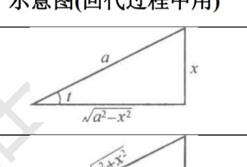
课件原图展开
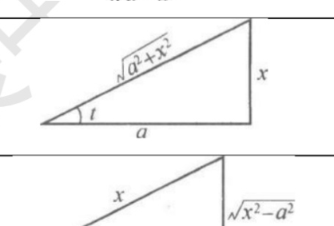
课件原图展开
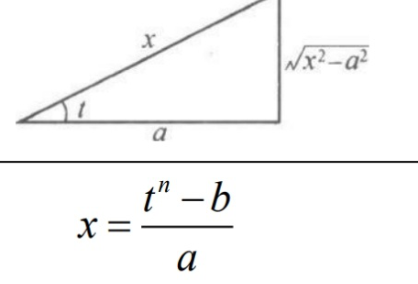
课件原图展开
核心结论 $$ \int f(x)dx \;\xrightarrow{x=\psi(t)}\; \int f(\psi(t))\psi'(t)dt = F(t)+C \;\xrightarrow{t=\psi^{-1}(x)}\; F(\psi^{-1}(x))+C $$
要求: $\psi(t)$ 单调可导, $\psi'(t) \neq 0$。
直觉 凑微分是"往里塞"($u=\varphi(x)$), 第二类换元是"往外拉"($x=\psi(t)$)——当被积函数含根号时主动设 $x$ 为某三角函数消去根号。
三种标准三角换元:
| 根号形式 | 所作替换 | 回代示意图 |
|---|---|---|
| $\sqrt{a^2-x^2}$ | $x = a\sin t$ | 直角边 $x$, 斜边 $a$, 邻边 $\sqrt{a^2-x^2}$ |
| $\sqrt{a^2+x^2}$ | $x = a\tan t$ | 对边 $x$, 邻边 $a$, 斜边 $\sqrt{a^2+x^2}$ |
| $\sqrt{x^2-a^2}$ $(x>0)$ | $x = a\sec t$ | 斜边 $x$, 邻边 $a$, 对边 $\sqrt{x^2-a^2}$ |
根式换元: 若含 $\sqrt[n]{ax+b}$, 直接令 $\sqrt[n]{ax+b}=t$, 则 $x=\frac{t^n-b}{a}$。
为什么用三角换元? 因为 $\sin^2 t + \cos^2 t = 1$, $1 + \tan^2 t = \sec^2 t$, $\sec^2 t - 1 = \tan^2 t$, 恰好消去平方和/差里的根号。
【来源: 0425（3）、0505（1）】
2.3 定积分的换元法 —— 别忘了换限! 易错
核心结论 $$ \int_a^b f(x)dx \;\xrightarrow{x=\varphi(t)}\; \int_\alpha^\beta f(\varphi(t))\varphi'(t)dt $$ 其中 $\varphi(\alpha)=a$, $\varphi(\beta)=b$。
易错 定积分换元必须同步换限, 且换元后不用再换回 $x$——直接用新变量和新上下限算。这是定积分换元比不定积分换元省事的地方!
区间再现公式 重点: $$ \int_a^b f(x)dx = \int_a^b f(a+b-x)dx $$ 令 $x = a+b-t$, 则 $dx=-dt$, 上限变下限, 翻过来即得上式。用途: 当 $f(x)+f(a+b-x)$ 可简化时使用。
特例(0 到 $\pi/2$ 上的 $\sin$/$\cos$): $$ \int_0^{\frac{\pi}{2}} f(\sin x)dx = \int_0^{\frac{\pi}{2}} f(\cos x)dx $$
【来源: 0510（1）、0716（1）】
三、分部积分法
3.1 公式与口诀 必考
核心结论 $$ \int u\,dv = uv - \int v\,du $$ 或写成: $\int uv'\,dx = uv - \int u'v\,dx$
直觉 分部积分是乘积求导公式的逆用: $(uv)' = u'v + uv'$, 移项得 $uv' = (uv)' - u'v$, 积分即得分部公式。
选 $u$ 的口诀: "反对幂指三" —— 按此顺序, 靠前的优先选为 $u$:
- 反: 反三角函数 ($\arcsin$, $\arctan$, $\arccos$)
- 对: 对数函数 ($\ln x$, $\log_a x$)
- 幂: 幂函数 ($x^n$)
- 指: 指数函数 ($e^x$, $a^x$)
- 三: 三角函数 ($\sin$, $\cos$, $\tan$)
为什么是这个顺序? 求导会"降级": 反三角 → 有理式, 对数 → 幂, 幂 → 常数 → 0, 指数不变, 三角变种类。选 $u$ 的原则是让 $\int v\,du$ 比原积分更简单, 所以优先选求导后能"降级"的。
注意 "越靠后越往后放"——选为 $dv$ 的那部分要容易积分。口诀中的顺序同时也是"谁做 $u$ (靠前)"和"谁做 $v$ (靠后)"的指导。
【来源: 0505（1）、0716（1）】
3.2 三类典型模式
(1) 幂函数 × 指数/三角 —— $u$ 选幂函数, 多次分部降幂 例: $\int x^n e^x dx$, $\int x^n \sin x dx$ —— 每分部一次, $x$ 的幂降一次, 最终 $x^0$ 时消去。
(2) 幂函数 × 对数/反三角 —— $u$ 选对数/反三角, 求导消去超越函数 例: $\int x^n \ln x\,dx$ —— $u=\ln x$, 求导后变成有理式; $\int x^n \arctan x\,dx$ 同理。
(3) 指数 × 三角 —— 循环型 重点 例: $\int e^{ax}\sin bx\,dx$ 或 $\int e^{ax}\cos bx\,dx$ 分部两次后会回到原积分, 解方程即得: $$ \int e^{ax}\sin bx\,dx = \frac{e^{ax}(a\sin bx - b\cos bx)}{a^2+b^2} + C $$ $$ \int e^{ax}\cos bx\,dx = \frac{e^{ax}(a\cos bx + b\sin bx)}{a^2+b^2} + C $$
行列式记忆法注意 循环型结果可写成行列式: $$ \int e^{ax}\sin bx\,dx=\frac{e^{ax}}{a^2+b^2}\begin{vmatrix}(e^{ax})' & (\sin bx)'\\ e^{ax} & \sin bx\end{vmatrix}+C $$ 分子 = "第一行导数、第二行原函数"的行列式——两行交叉项自动带符号, 一次写完, 免去循环解方程。题型带 $a=0$ 或 $b=0$ 时退化为普通公式, 也适用。
递推型: $\int \sec^n x\,dx$ 或 $\int \tan^n x\,dx$, 分部后得到同类但次数更低的形式, 建立递推公式。
易错 定积分分部: $\int_a^b u\,dv = uv\big|_a^b - \int_a^b v\,du$, 别忘了第一项代入上下限。
【来源: 0505（1）、0716（1）、0716（2）】
四、有理函数与三角函数的积分
4.1 有理函数积分 必考
定义 有理函数 = 两个多项式的商 $\frac{P(x)}{Q(x)}$。若 $\deg P < \deg Q$ 称真分式, 否则为假分式。
步骤: 假分式先做多项式除法化为"多项式 + 真分式"; 真分式分解为部分分式。
部分分式分解定理: 若 $Q(x)=b_0(x-a)^\alpha\cdots(x-b)^\beta(x^2+px+q)^\mu\cdots$ ($p^2-4q<0$), 则: $$ \frac{P(x)}{Q(x)} = \frac{A_1}{x-a} + \frac{A_2}{(x-a)^2} + \cdots + \frac{A_\alpha}{(x-a)^\alpha} + \cdots + \frac{P_1x+Q_1}{x^2+px+q} + \cdots $$
系数的求法:
- 赋值法: 等式两边同乘分母, 代入 $x$ 的特殊值(如 $x=a$, $x=b$)来求系数
- 比较系数法: 展开后比较同次幂系数
- 取极限法: 取 $x\to\infty$ 得到高次项间的关系
四种基本部分分式的积分: $$ \int \frac{A}{x-a}dx = A\ln|x-a|+C $$ $$ \int \frac{A}{(x-a)^k}dx = \frac{A}{1-k}\frac{1}{(x-a)^{k-1}}+C \;(k>1) $$ $$ \int \frac{Px+Q}{x^2+px+q}dx \;\text{—— 配方 + 凑微分 + arctan} $$ $$ \int \frac{Px+Q}{(x^2+px+q)^k}dx \;\text{—— 三角换元或递推} $$
【来源: 0505（1）、0716（2）】
4.2 三角函数积分 高频
万能代换 (最后手段): 令 $t = \tan\frac{x}{2}$, 则: $$ \sin x = \frac{2t}{1+t^2}, \quad \cos x = \frac{1-t^2}{1+t^2}, \quad dx = \frac{2}{1+t^2}dt $$ 把三角函数全部化为 $t$ 的有理函数。万能代换总能算出来, 但计算量大——优先用凑微分/降幂。
常用技巧:
- $\int \sin^n x\,dx$ 或 $\int \cos^n x\,dx$: $n$ 为奇数, 拆一个出来凑 $d\cos x$ 或 $d\sin x$; $n$ 为偶数, 用半角公式降次 $\sin^2 x = \frac{1-\cos 2x}{2}$, $\cos^2 x = \frac{1+\cos 2x}{2}$
- $\int \sin^m x\cos^n x\,dx$: 若 $m$ 或 $n$ 为奇数, 拆一个凑微分; 均为偶数则降幂
- $\int \tan^n x\,dx$: $\tan^2 x = \sec^2 x - 1$, 拆项降次
- $\int \frac{dx}{1+\sin x}$ 型: 分子分母同乘共轭
- "化 tan x" 通法高频 被积函数是 $\sin/\cos$ 的偶次幂齐次分式(如 $\int\frac{dx}{\sin^4x\cos^2x}$): 分子分母同除以 $\cos$ 的最高次幂, 化成正切的多项式: $\int\frac{dx}{\sin^4x\cos^2x}=\int\frac{\sec^6x\,dx}{\tan^4x}=\int\frac{(1+t^2)^2}{t^4}dt$($t=\tan x$)。凡是"同幂次分式"先想化 tan。
- 辅助角公式合项高频 分母含 $\sin x\pm\cos x$ 混合: 用 $\sin x+\cos x=\sqrt2\sin(x+\frac\pi4)$ 化成单一 $\sin$, 再令 $t=x+\frac\pi4$。例: $\int\frac{dx}{\sqrt2+\sin x+\cos x}$。
例题用到的特定模式: $$ \int \frac{\sin x - \cos x}{\sin x + 2\cos x}dx $$ 做法: 设分子 $= A(\text{分母}) + B(\text{分母})'$, 其中 $(\sin x+2\cos x)' = \cos x - 2\sin x$。解 $A,B$ 后拆成两项: 一项是 $A\int dx$, 另一项凑 $\int \frac{d(\text{分母})}{\text{分母}}$。
【来源: 0505（1）、0505（2）】
五、定积分
5.1 定积分的定义 必考
核心结论 $$ \int_a^b f(x)dx = \lim_{\lambda\to 0}\sum_{i=1}^n f(\xi_i)\Delta x_i $$ 其中 $\lambda = \max\{\Delta x_i\}$ 是最大子区间长度。
四步: ① 分割 → ② 取点 → ③ 作和 → ④ 取极限。
直觉 把 $[a,b]$ 切成 $n$ 个小区间, 每段面积近似为 $f(\xi_i)\Delta x_i$(矩形面积), 分得越细近似越好, 极限就是精确面积。黎曼和 → 定积分。
与极限的关系 —— 定积分定义求极限 高频: $$ \lim_{n\to\infty}\frac{1}{n}\sum_{k=1}^n f\!\left(\frac{k}{n}\right) = \int_0^1 f(x)dx $$ 识别特征: 含有 $\frac{1}{n}$ 因子 + 通项 $f(\frac{k}{n})$。
更一般: $\lim_{n\to\infty}\frac{b-a}{n}\sum_{k=1}^n f\!\left(a+k\frac{b-a}{n}\right) = \int_a^b f(x)dx$。
【来源: 0505（2）、定积分作业解析】
5.2 定积分的几何意义
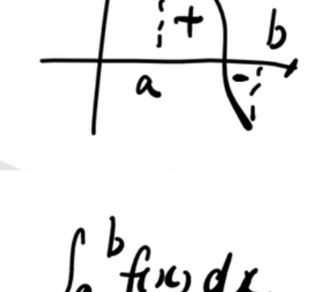
课件原图展开
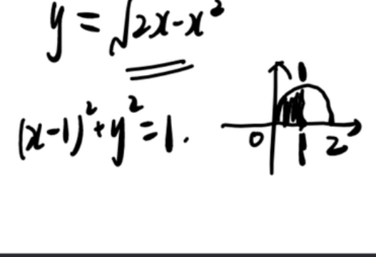
课件原图展开
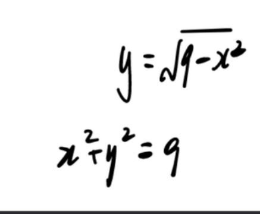
课件原图展开
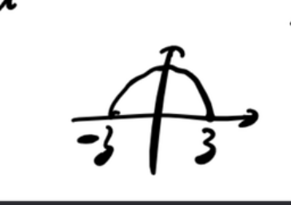
课件原图展开
$\int_a^b f(x)dx$ 表示曲线 $y=f(x)$ 与 $x=a$, $x=b$, $x$ 轴围成图形的面积的代数和: $x$ 轴上方取正, 下方取负 ($a<b$)。
利用几何意义简化: 如 $\int_0^2 \sqrt{2x-x^2}dx$ —— 这是半圆 $(x-1)^2+y^2=1$ (上半) 的面积 $= \frac{\pi}{2}$ 【AI补全】, 无需积分计算。
【来源: 0505（2）】
5.3 定积分的性质
(1) 基本性质: $$ \int_a^b f(x)dx = -\int_b^a f(x)dx, \quad \int_a^a f(x)dx = 0 $$ $$ \int_a^b [k_1f(x)+k_2g(x)]dx = k_1\int_a^b f(x)dx + k_2\int_a^b g(x)dx $$ $$ \int_a^b f(x)dx = \int_a^c f(x)dx + \int_c^b f(x)dx \quad (\text{区间可加性}) $$
(2) 保序性: 若 $f(x) \leq g(x)$ 在 $[a,b]$ 上, 则 $\int_a^b f(x)dx \leq \int_a^b g(x)dx$ ($a<b$)。
(3) 绝对值不等式: $$ \left|\int_a^b f(x)dx\right| \leq \int_a^b |f(x)|dx \quad (a<b) $$
(4) 估值不等式: 若 $m \leq f(x) \leq M$ 在 $[a,b]$ 上, 则 $$ m(b-a) \leq \int_a^b f(x)dx \leq M(b-a) \quad (a<b) $$
重点函数比较大小题: 在区间内比较 $f$ 和 $g$ 的大小 → 积分也保持大小关系。常用在选择题中判断积分的大小排序。
【来源: 0505（2）、定积分作业解析】
5.4 积分中值定理 必考
核心结论 若 $f(x)$ 在 $[a,b]$ 上连续, 则 $\exists \xi \in [a,b]$, 使得: $$ \int_a^b f(x)dx = f(\xi)(b-a) $$
直觉 曲边梯形的面积 = 以某高度 $f(\xi)$ 为高的等宽矩形面积。$f(\xi) = \frac{1}{b-a}\int_a^b f(x)dx$ 就是 $f$ 在 $[a,b]$ 上的平均值。
用途: ① 求函数在区间上的平均值 ② 去掉积分号(证明题) ③ 与微分中值定理联用。
【连接】 与微分中值定理板块呼应: 积分中值定理 = "积分的拉格朗日", 都是存在某个中间点使等式成立。
【来源: 0505（2）、定积分】
5.5 牛顿-莱布尼茨公式 (微积分基本定理) 必考
核心结论 若 $F(x)$ 是连续函数 $f(x)$ 在 $[a,b]$ 上的一个原函数, 则: $$ \int_a^b f(x)dx = F(b) - F(a) = F(x)\big|_a^b $$
直觉 这是整个微积分的枢纽——把"求面积"(定积分)和"求原函数"(不定积分)连接起来。从此定积分不用每次都画矩形做黎曼和, 直接找原函数代上下限就行。
【来源: 0510（1）】
六、定积分的计算技巧
6.1 对称区间上的奇偶性 高频
核心结论
- 若 $f(x)$ 为奇函数: $\int_{-a}^a f(x)dx = 0$
- 若 $f(x)$ 为偶函数: $\int_{-a}^a f(x)dx = 2\int_0^a f(x)dx$
直觉 奇函数关于原点对称, 正负面积抵消; 偶函数对称, 左右面积相同。
常用技巧: 面对对称区间 $[-a,a]$, 把被积函数拆成奇部 + 偶部 —— 奇部积分为 0, 只算偶部。
【来源: 0505（2）、定积分、0716（1）】
6.2 周期函数的积分 高频
核心结论 若 $f(x)$ 以 $T$ 为周期且连续, 则: $$ \int_a^{a+T} f(x)dx = \int_0^T f(x)dx \quad (\text{任意 } a) $$ $$ \int_a^{a+nT} f(x)dx = n\int_0^T f(x)dx $$
直觉 周期函数在一个完整周期内的积分与起点无关——因为每个周期的"净面积"相同。
【例】 $\int_0^{5\pi} |\sin x|dx = 5\int_0^\pi \sin x\,dx = 5 \times 2 = 10$。
【来源: 0505（2）、定积分作业解析】
6.3 点火公式 (Wallis 公式) 必考
核心结论 $$ \int_0^{\frac{\pi}{2}} \sin^n x\,dx = \int_0^{\frac{\pi}{2}} \cos^n x\,dx = \begin{cases} \dfrac{n-1}{n} \cdot \dfrac{n-3}{n-2} \cdots \dfrac{1}{2} \cdot \dfrac{\pi}{2}, & n \text{ 为正偶数} \\[10pt] \dfrac{n-1}{n} \cdot \dfrac{n-3}{n-2} \cdots \dfrac{2}{3} \cdot 1, & n \text{ 为大于 1 的正奇数} \end{cases} $$
记忆: 从 $n$ 开始每次减 2 乘下去, 偶数以 $\frac{\pi}{2}$ 结尾, 奇数以 $1$ 结尾。名字来源: 像导火线一样"引燃"降次。
何时用: 看到 $\int_0^{\pi/2} \sin^n x\,dx$ 或 $\int_0^{\pi/2} \cos^n x\,dx$, 直接代公式, 不用分部积分。
易错 必须积分区间是 $[0,\frac{\pi}{2}]$; 其他区间要先通过换元或对称性转化为这个区间。
【来源: 0510（1）、定积分、0716（2）】
6.4 几个重要定积分结论
$$ \int_0^\pi xf(\sin x)dx = \frac{\pi}{2}\int_0^\pi f(\sin x)dx = \pi\int_0^{\frac{\pi}{2}} f(\sin x)dx $$ $$ \int_0^{\frac{\pi}{2}} f(\sin x)dx = \int_0^{\frac{\pi}{2}} f(\cos x)dx $$ $$ \int_0^a \sqrt{a^2-x^2}\,dx = \frac{\pi a^2}{4} \quad (\text{四分之一圆面积}) $$
区间再现的典型应用: $\int_0^\pi \frac{x\sin x}{1+\cos^2 x}dx$, 令 $x=\pi-t$ 可得原式 $=\frac{\pi}{2}\int_0^\pi \frac{\sin x}{1+\cos^2 x}dx$ 【AI补全】。核心思想: 当 $f(x)+f(a+b-x)$ 能消去麻烦的部分时使用。
【来源: 0510（1）、0716（1）、0716（2）】
七、变上限积分函数
7.1 定义与性质 必考
定义 设 $f(x)$ 在 $[a,b]$ 上可积, 称 $\Phi(x) = \int_a^x f(t)dt$ ($x\in[a,b]$) 为变上限积分函数。
关键性质:
- 连续性: 变上限积分函数必连续 (只要 $f$ 可积)
- 可导性: 若 $f$ 在 $[a,b]$ 上连续, 则 $\Phi(x)$ 可导, 且 $\Phi'(x) = f(x)$
- 奇偶性: $f$ 为奇函数 ⇒ $\int_0^x f(t)dt$ 为偶函数; $f$ 为偶函数 ⇒ $\int_0^x f(t)dt$ 为奇函数
- 周期性: $f$ 以 $T$ 为周期且 $\int_0^T f(x)dx=0$ ⇒ $\int_a^x f(t)dt$ 也以 $T$ 为周期
【来源: 0510（1）、定积分作业解析、0715（2）】
7.2 变上限积分的求导公式 必考
核心结论 $$ \frac{d}{dx}\int_a^{\varphi(x)} f(t)dt = f(\varphi(x))\cdot\varphi'(x) $$ $$ \frac{d}{dx}\int_{\psi(x)}^{\varphi(x)} f(t)dt = f(\varphi(x))\varphi'(x) - f(\psi(x))\psi'(x) $$
直觉 上限是 $x$ → 导数就是被积函数(把 $t$ 换成 $x$); 上限是 $\varphi(x)$ → 链式法则再乘 $\varphi'(x)$; 下限也要考虑(减掉)。
含 $x$ 在积分号和被积函数中的情况:
- $\int_a^x (x-t)f(t)dt$: 先把 $x$ 提出积分号外(积分变量是 $t$, $x$ 视作常数): $x\int_a^x f(t)dt - \int_a^x tf(t)dt$, 再求导
- $\int_a^x f(x-t)dt$: 换元 $u=x-t$, 变为 $\int_0^{x-a} f(u)du$, 再求导
【来源: 0510（1）、0715（2）】
7.3 变上限积分求极限 高频
典型模式: $\frac{0}{0}$ 型, 洛必达 + 变上限求导 + 等价无穷小。 $$ \lim_{x\to 0}\frac{\int_0^x f(t)dt}{x^n} \;\xrightarrow{\text{洛}}\; \lim_{x\to 0}\frac{f(x)}{nx^{n-1}} $$
易错 洛必达前先确认是 $\frac{0}{0}$ 或 $\frac{\infty}{\infty}$ 型; 求导时注意上限是 $x$ 还是 $x$ 的函数。
【来源: 0510（1）】
八、广义积分 (反常积分)
8.1 无穷限的反常积分
定义 $$ \int_a^{+\infty} f(x)dx = \lim_{b\to+\infty}\int_a^b f(x)dx $$ $$ \int_{-\infty}^b f(x)dx = \lim_{a\to-\infty}\int_a^b f(x)dx $$ $$ \int_{-\infty}^{+\infty} f(x)dx = \lim_{a\to-\infty}\int_a^c f(x)dx + \lim_{b\to+\infty}\int_c^b f(x)dx $$
极限存在 → 收敛; 不存在 → 发散。
注意 $\int_{-\infty}^{+\infty}$ 必须两个极限同时存在才收敛; 但凡一个不存在, 整体发散。
重要结论 (p-积分): $$ \int_a^{+\infty} \frac{dx}{x^p} \;(a>0) \quad \begin{cases} \text{收敛}, & p>1 \\ \text{发散}, & p \leq 1 \end{cases} $$ 特别地, $p=1$ 时 $\int_a^{+\infty}\frac{dx}{x} = \ln x\big|_a^{+\infty}$ 发散。
【来源: 0510（1）】
8.2 无界函数的反常积分 (瑕积分) 易错
定义 若 $f(x)$ 在 $a$ 的任一邻域内无界, 称 $a$ 为瑕点。
- $a$ 为瑕点: $\int_a^b f(x)dx = \lim_{t\to a^+}\int_t^b f(x)dx$
- $b$ 为瑕点: $\int_a^b f(x)dx = \lim_{t\to b^-}\int_a^t f(x)dx$
- $c\in(a,b)$ 为瑕点: $\int_a^b = \lim_{t\to c^-}\int_a^t + \lim_{t\to c^+}\int_t^b$, 两个极限同时存在才收敛
重要结论 (q-积分): $$ \int_a^b \frac{dx}{(x-a)^q} \;(a<b) \quad \begin{cases} \text{收敛}, & q<1 \\ \text{发散}, & q \geq 1 \end{cases} $$
易错 瑕积分看起来像普通定积分但被积函数在某处无穷! 如 $\int_0^1 \frac{dx}{\sqrt{x}}$ 看起来是定积分, 实则在 $x=0$ 处是瑕积分。一定要先检查被积函数在积分区间内是否有瑕点。
【来源: 0510（2）】
8.3 反常积分的判敛 必考
比较判别法 (定理): 若 $0 \leq f(x) \leq g(x)$ ($x\geq a$) 且它们有共同的瑕点, 则:
- $\int_a^{+\infty} g(x)dx$ 收敛 ⇒ $\int_a^{+\infty} f(x)dx$ 收敛
- $\int_a^{+\infty} f(x)dx$ 发散 ⇒ $\int_a^{+\infty} g(x)dx$ 发散
极限形式 (同阶同敛散): 若 $\lim_{x\to+\infty}\frac{f(x)}{g(x)} = \lambda$ ($0<\lambda<+\infty$), 则 $\int_a^{+\infty}f(x)dx$ 与 $\int_a^{+\infty}g(x)dx$ 同时收敛或同时发散。
极限形式的两个边界注意 $\lambda=0$: $f$ 被 $g$ 控制, 小者随大者: $g$ 收敛 ⇒ $f$ 收敛; $\lambda=+\infty$: $f$ 控制 $g$, 大者随小者: $g$ 发散 ⇒ $f$ 发散。极限形式可以放宽到 $0\le\lambda\le+\infty$ 用。
判敛策略:
- 找瑕点: $x\to\infty$ 或 $x$ 趋于某值使被积函数无界
- 在瑕点附近找等价无穷小/无穷大, 与 p-积分/q-积分比较
- 注意多个瑕点要分段讨论, 每段都收敛整体才收敛
常见比较基准: $$ \int_1^{+\infty}\frac{dx}{x^p}: p>1 \text{ 收敛}, p\leq 1 \text{ 发散} $$ $$ \int_0^1\frac{dx}{x^q}: q<1 \text{ 收敛}, q\geq 1 \text{ 发散} $$ $$ \int_2^{+\infty}\frac{dx}{x(\ln x)^p}: p>1 \text{ 收敛}, p\leq1 \text{ 发散}\ \ \text{【对数标尺, 必考】} $$
直觉 对数标尺的 $p$ 判据方向与 $x^p$ 相反? 不, 完全同向: 都是"分母越强越收敛"。$x(\ln x)^p$ 里 $x$ 已经保证了比 $1/x$ 略强, 剩下比拼 $(\ln x)^p$ 的力度——$p>1$ 才压得住。它与 $p$ 级数 $\sum\frac1{n(\ln n)^p}$ 是同一族(级数板块同款标尺)。
【来源: 0510（1）、0510（2）、0715（2）、0716（2）】
8.4 反常积分的计算
方法: ① 先当普通定积分, 用牛莱公式写出 $F(x)$ ② 对上限/下限取极限(瑕点处取单侧极限) ③ 若极限存在, 即为积分值; 不存在则发散。
典型: $\int_0^{+\infty} \frac{dx}{1+x^2} = \lim_{b\to+\infty}\arctan x\big|_0^b = \frac{\pi}{2}$。
【来源: 0510（1）、0510（2）】
九、定积分的应用
9.1 平面图形的面积 必考
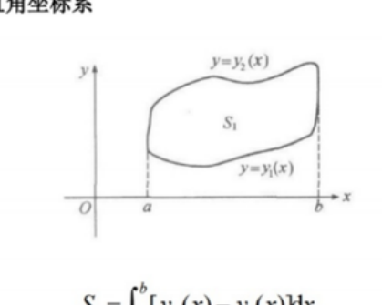
课件原图展开
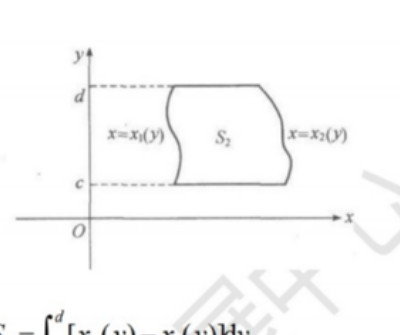
课件原图展开
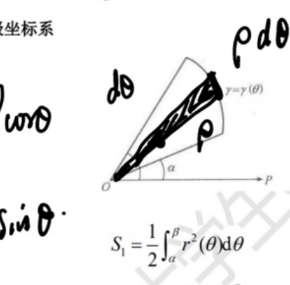
课件原图展开
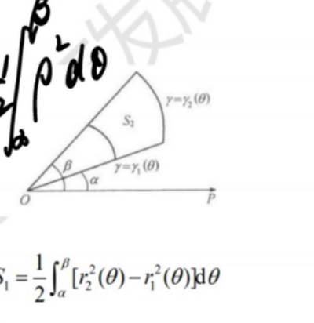
课件原图展开
(1) 直角坐标:
- X 型: $S = \int_a^b [y_{\text{上}}(x) - y_{\text{下}}(x)]dx$
- Y 型: $S = \int_c^d [x_{\text{右}}(y) - x_{\text{左}}(y)]dy$
(2) 极坐标: $$ S = \frac{1}{2}\int_\alpha^\beta r^2(\theta)d\theta $$ 两个极径之间: $S = \frac{1}{2}\int_\alpha^\beta [r_2^2(\theta) - r_1^2(\theta)]d\theta$
典型图形: 心形线 $r=a(1+\cos\theta)$ 面积 $= \frac{3}{2}\pi a^2$; 双纽线 $r^2=a^2\cos 2\theta$ 面积 $=a^2$ 【AI补全】。
【来源: 0510（2）、0715（2）】
9.2 旋转体体积 必考
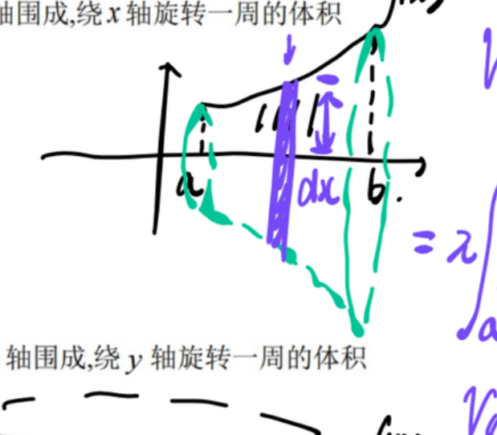
课件原图展开
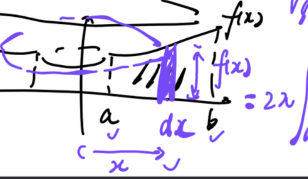
课件原图展开
(1) 绕 $x$ 轴旋转 (曲线 $y=f(x) \geq 0$, $x\in[a,b]$): $$ V_x = \pi\int_a^b f^2(x)dx $$
(2) 绕 $y$ 轴旋转 (柱壳法): $$ V_y = 2\pi\int_a^b x|f(x)|dx $$
(3) 由 $x=g(y) \geq 0$, $y\in[c,d]$ 绕 $y$ 轴旋转: $$ V_y = \pi\int_c^d g^2(y)dy $$
(4) 绕 $y$ 轴旋转 (柱壳法): $V_x = 2\pi\int_c^d y|g(y)|dy$
直觉: 绕 $x$ 轴 → 圆盘法, 面积是 $\pi r^2 = \pi f^2(x)$; 绕 $y$ 轴 → 柱壳法, 把图形看成很多薄壳, 每个壳体积 $2\pi x \cdot f(x) \cdot dx$ (周长 × 高度 × 厚度)。
绕平行于坐标轴的直线旋转: 先平移坐标系, 把旋转轴变成坐标轴。
【来源: 0510（2）、0715（2）】
9.3 平面曲线的弧长 (数一数二)
(1) 参数方程 $x=x(t), y=y(t)$ ($\alpha\leq t\leq\beta$): $$ s = \int_\alpha^\beta \sqrt{x'^2(t) + y'^2(t)}\,dt $$
(2) 直角坐标 $y=y(x)$ ($a\leq x\leq b$): $$ s = \int_a^b \sqrt{1 + y'^2(x)}\,dx $$
(3) 极坐标 $r=r(\theta)$ ($\alpha\leq\theta\leq\beta$): $$ s = \int_\alpha^\beta \sqrt{r^2(\theta) + r'^2(\theta)}\,d\theta $$
【来源: 0510（2）】
9.4 旋转曲面面积 (数一数二)
曲线 $y=f(x)\geq 0$ ($a\leq x\leq b$) 绕 $x$ 轴旋转: $$ S = 2\pi\int_a^b y\,ds = 2\pi\int_a^b f(x)\sqrt{1+f'^2(x)}\,dx $$
直觉: 每个微弧段 $ds$ 旋转出一个"窄带", 面积 $= 2\pi y \cdot ds$ (周长 × 宽度)。
【来源: 0510（2）、0715（3）】
9.5 物理应用 (数一数二)
微元法四步: ① 建坐标系, 确定积分区间 ② 取微元 $[x,x+\Delta x]$ ③ 写出微元的近似量 $\Delta Q \approx f(x)\Delta x$ ④ 积分。
常见类型:
- 变力做功: $W = \int_a^b F(x)dx$
- 水压力: $P = \int_a^b \rho g \cdot \text{深度} \cdot \text{宽度}\,dx$
- 质心/形心: $\bar{x} = \frac{\int x\,dm}{\int dm}$, $\bar{y} = \frac{\int y\,dm}{\int dm}$ (均匀时 $\rho=1$ 即为形心)
- 抽水做功: $W = \int \rho g \cdot \text{提升高度} \cdot \text{体积微元}$
【来源: 定积分、0715（3）】
十、易错点与考法总结
10.1 高频易错点 易错
- 不定积分漏加 $C$: 不定积分结果必须加常数项, 定积分不用
- 定积分换元忘换限: $x=\varphi(t)$ 后上下限同步变为 $t$ 的对应值
- $\int\frac{1}{x}dx$ 忘了绝对值: 是 $\ln|x|$, 不是 $\ln x$
- 瑕积分当普通定积分: 如 $\int_{-1}^1\frac{dx}{x^2}$ 在 $x=0$ 处有瑕点, 不能直接牛莱
- 分部积分选 $u$ 选错: 口诀"反对幂指三"——靠前选为 $u$
- 奇偶性用在非对称区间: $\int_{-a}^a$ 才能用奇偶性, $\int_0^a$ 不行
- 变上限求导忘了乘上限导数: $\frac{d}{dx}\int_a^{x^2}f(t)dt = f(x^2)\cdot 2x$
- 加减里的等价替换: 如 $\sin x$ 和 $\tan x$ 在 $x\to 0$ 时等价, 但 $\sin x - \tan x$ 不能各自换成 $x$
10.2 考法视角
| 考法 | 频次 | 常用手段 |
|---|---|---|
| 不定积分计算 | 必考 | 凑微分 → 分部 → 有理函数分解 → 三角换元 |
| 定积分计算 | 必考 | 牛莱公式 + 奇偶性/周期性/点火公式 |
| 变上限积分求导/极限 | 高频 | 洛必达 + 变上限求导 |
| 积分比大小 | 高频 | 保序性 / 函数在区间内的单调性 |
| 反常积分判敛 | 必考 | 比较判别法 / p-积分/q-积分 |
| 定积分应用(面积/体积) | 必考 | 公式 + 正确确定积分变量和上下限 |
| 积分不等式证明 | 重点 | 变上限造辅助函数 / 积分中值定理 / 柯西-施瓦茨 |
10.3 柯西-施瓦茨不等式 重点
$$ \left(\int_a^b f(x)g(x)dx\right)^2 \leq \int_a^b f^2(x)dx \cdot \int_a^b g^2(x)dx $$
证明思路: 构造辅助函数 $F(t) = \int_a^b [f(x)t + g(x)]^2 dx \geq 0$, 展开后是关于 $t$ 的二次函数, 由于恒非负, 判别式 $\Delta \leq 0$, 即得不等式。
【来源: 0715（2）、0716（1）】
10.4 积分不等式证明策略
- 变上限造辅助函数: 令 $F(x) = \int_a^x f(t)dt - \text{(要证的不等式右端)}$, 求导判单调
- 积分中值定理: 去掉积分号, 转化为函数值比较
- 柯西-施瓦茨: 适合处理 $\int fg$ 与 $\int f^2$、$\int g^2$ 的关系
- 分部积分: 含 $f', f''$ 时常分部积分转化
- 泰勒展开: 已知 $f''(x)$ 符号时, 用泰勒展开后积分
【来源: 0715（2）、0716（1）】
知识连接
- 积分 ← 求导: 不定积分 = 求导的逆运算; 牛莱公式连接定积分和原函数
- 积分 → 微分方程: 解微分方程本质是积分
- 积分 → 级数: 部分和 → 定积分定义求极限
- 积分中值定理 ↔ 微分中值定理: 都是"存在某点使等式成立"
- 柯西-施瓦茨 ↔ 向量内积不等式: $\int fg$ 可视为函数空间的内积
- 变上限积分 ↔ 极限: 洛必达 + 变上限求导 是极限题的常见解法
- 换元法 ↔ 链式法则: 第一类换元 = 链式法则逆用; 第二类换元 = 反函数求导
- 分部积分 ↔ 乘积求导: $(uv)' = u'v + uv'$ 逆用
📖 例题全量见: 积分 · 例题集